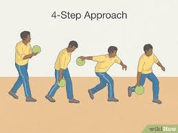

10 Common Rules Every Bowler Should Know
- A game consists of 10 frames – In each frame, a player gets up to two chances to knock down all 10 pins.
- A strike earns bonus points – If you knock down all 10 pins on the first roll of a frame, you get 10 points plus the total of your next two rolls.
- A spare also earns a bonus – If you knock down all 10 pins in two rolls (a spare), you earn 10 points plus the score of your next roll.
- In the tenth frame, you can earn a third roll – If you get a strike or a spare in the 10th frame, you’re allowed one or two extra rolls to finish the frame.
- The ball must stay behind the foul line – If any part of your body crosses the foul line during a roll, that roll scores zero regardless of pins knocked down.
- Try not to have more than 1-2 balls on the return rack – Some bowlers have more than 1 ball for different situations, but try not to put too many on the return rack to avoid clutter.
- Make good use of courtesy and respect – If you see a bowler about to release their shot, let them go first if they are in the lane to your immediate right.
- Scoring is cumulative – Your total score builds throughout the game, with strikes and spares giving you a chance for higher scores when bowled in succession.
- No re-throws unless there's interference – A ball that gets stuck or affected by outside interference may be re-thrown, but not if it simply ends up in the gutter.
- Respect lane courtesy – Always let the bowler on your right go first if you’re both ready to bowl at the same time. This keeps the game flowing and respectful.
Common Form When Bowling

Step 1: Pushaway – Start your motion with a pushaway: extend your ball while pushing it half-forward to start your backswing.
Step 2: Downswing – Let gravity assist the ball drop naturally into a relaxed downswing.
Step 3: Slide – As your arm swings down, slide your front foot forward with balance.
Step 4: Release – Release the ball at the bottom of the arc while following through with your throwing arm. Maintain a fluid motion and smooth follow-through.
The Importance Of Equipment
Having your own bowling equipment is important because it improves comfort, consistency, and performance. A ball that’s drilled to fit your hand allows for better grip and control, which leads to more accurate and powerful shots. Personal shoes also offer better slide and stability compared to worn rental ones. Overall, using your own gear helps build confidence and develop your technique more effectively.
Websites to buy eqipment:
-
BowlerX
Known for great prices and a wide selection of balls, bags, shoes, and accessories.
-
Bowling.com
One of the largest online bowling stores, offering beginner to pro-level gear.
-
Storm Bowling
You can buy directly or find pro shop partners through their website.